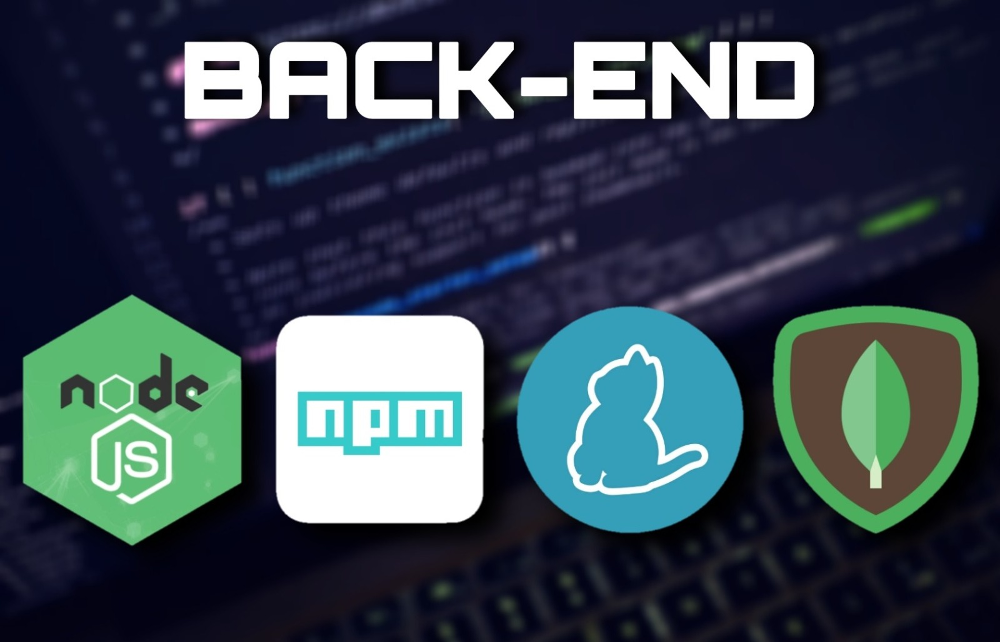

BACK END WEB DEVELOPER

Back end developer:
The backend is the server side of the website. It stores and arranges data, and also makes sure everything on the client side of the website works fine.
It is part of the website that you cannot see and interact with. It is the portion of software that does not come in direct contact with the users. The parts and characteristics developed by backend designers are indirectly accessed by users through a front-end application. Activities, like writing APIs, creating libraries, and working with system components without user interfaces or even systems of scientific programming, are also included in the backend.
Back End Languages
The back-end portion is built by using some languages which are discussed below:
-
PHP: PHP is a server-side scripting language designed specifically for web development. Since PHP code is executed on the server side, it is called a server-side scripting language.
-
C++: It is a general-purpose programming language and is widely used nowadays for competitive programming. It is also used as a backend language. So if you are curious about learning C++ then you can take help from Geeksforgeeks C++ Programming Foundation – Self-Paced course and learn all the basics of the language without hassle.
-
Java: Java is one of the most popular and widely used programming languages and platforms. It is highly scalable. Java components are easily available and for learning this one of the most popular languages you can check the Geeksforgeeks Java Programming Foundation – Self-Paced course. It will help you understand the proper framework, concepts, functions, and more.
-
Python: Python is a programming language that lets you work quickly and integrate systems more efficiently. It is also a very important language for the back end and for mastering it you can take a look at Python Programming Foundation -Self-Paced course. This is a beginner-friendly course and will help you to build a strong foundation for python.
-
Node.js: Node.js is an open-source and cross-platform runtime environment for executing JavaScript code outside a browser. You need to remember that NodeJS is not a framework, and it’s not a programming language. Most people are confused and understand it’s a framework or a programming language. We often use Node.js for building back-end services like APIs like Web App or Mobile App. It’s used in production by large companies such as Paypal, Uber, Netflix, Walmart, and so on.
Back-End Frameworks:
-
Express – Express is a Nodejs framework used for backend/server-side development. It is used to build single-page, multi-page, and hybrid web applications. With its help, you can handle multiple different HTTP requests.
-
Django – Django is a Python web-based framework, following the model-template-views pattern. It is used to build large and complex web applications. Its features include being fast, secure, and scalable.
-
Ruby on Rails – Ruby on Rails is a server-side framework following the model-view-controller architecture pattern. It provides default structures such as web services, web pages, and databases.
-
Laravel – Laravel is a web application framework for PHP and is robust. The feature which makes it perfect is reusing the components of different frameworks for creating a web application.
-
Spring – This server-side framework provides infrastructure support for Java applications. It acts as a support to various frameworks like Hibernate, Struts, EJB, etc. It also has extensions that help in developing Java applications quickly and easily.
Some more back-end programming/scripting languages are C#, Ruby, GO, etc.